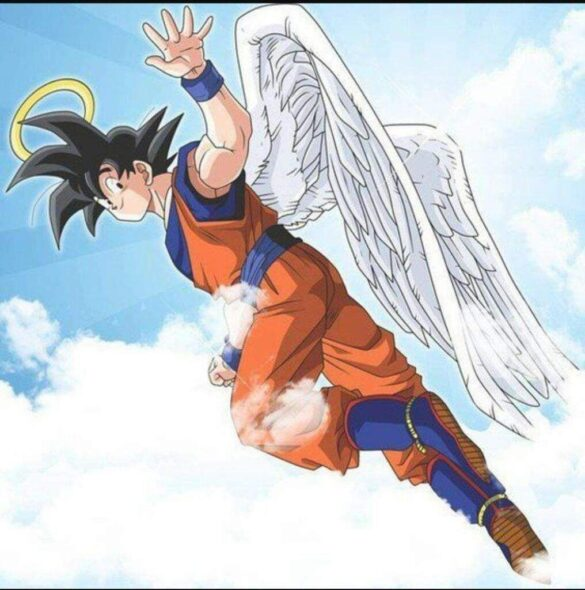

Todos probablemente graduados de preparatoria
Esta pagina fue creada por el numero 7 de la lista y el mas guapo entre todos
estos ultimos meses descubriras que no todos son malas personas pero hay exepciones entre la gente
Si gustas ver los demas compañeros ve la imagen de abajo de el año pasado y veras los faltantes en la foto

Esas son las fotos de recuerdo que he captado con mis compañeros y maestros
Si gustas sabere mas sobre los momentos divertidos de cick aqui abajo
Si gusta regresar a ver la pagina anterior da click aqui abajo
(<---)